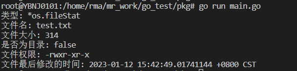
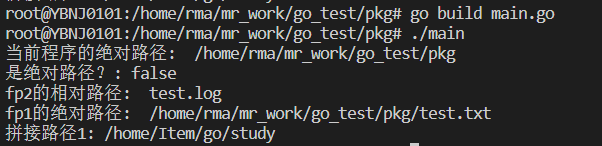
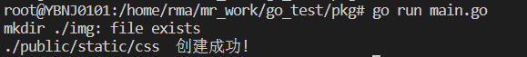
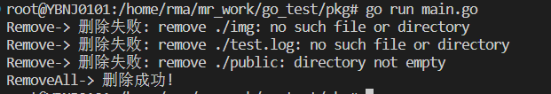

介绍
在Go语言中，文件操作的大多数函数都在os包里面，文件的信息包括文件名、文件大小、修改权限、修改时间等。
文件接口属性(FileInfo)
1 | type FileInfo interface { |
文件信息结构体(fileStat)
1 | type fileStat struct { |
fileStat结构体的常用方法汇总
| 方法名 | 描述 |
|---|---|
| Name() string | 返回文件名 |
| IsDir() bool | 判断是否是目录 |
| Size() int64 | 返回文件大小 |
| Mode() FileMode | 返回文件权限 |
| ModTime() time.Time | 文件的最后修改时间 |
| Sys() interface{} | 文件的详细信息，获取的值是*syscall.Stat_t类型 |
使用示例
1 | func main() { |
输出：

求路径方法
方法列表
方法的所属包: path/filepath
| 方法名 | 描述 |
|---|---|
| IsAbs(path string) bool | 判断是否是绝对路径 |
| Rel(basepath, targpath string) (string, error) | 返回一个相对于basepath的路径 |
| Abs(path string) (string, error) | 返回绝对路径 |
| Join(elem ...string) string | 拼接路径 |
使用示例
1 | func main() { |
输出：

目录操作
创建目录
方法列表
| 方法名 | 描述 |
|---|---|
| os.Mkdir(name string, perm FileMode) error | 创建名称为name的目录，权限设置是perm |
| os.MkdirAll(path string, perm FileMode) error | 根据path创建多级子目录 |
使用示例
1 | func main() { |
输出：

删除目录/文件
方法列表
| 方法名 | 描述 |
|---|---|
| os.Remove(name string) error | 删除名称为name的目录/文件，当目录下有文件或者其他目录会出错 |
| os.RemoveAll(path string) error error | 根据path删除多级子目录 |
使用示例
1 | func main() { |

文件操作
创建文件
os.Create()创建文件，如果文件存在，会将其覆盖。os.Create()本质上调用的是OpenFile, 源码如下:
1 | func Create(name string) (*File, error) { |
使用示例
1 | package main |
打开和关闭文件
方法列表
| 方法名 | 描述 |
|---|---|
| Open(name string) (*File, error) | 只读模式打开文件，本质上调用的是OpenFile |
| OpenFile(name string, flag int, perm FileMode) (*File, error) | 打开文件，可以传入模式和权限 |
OpenFile入参介绍
| flag值 | 代表的模式 |
|---|---|
| O_RDONLY | 只读模式 |
| O_WRONLY | 只写模式 |
| O_RDWR | 读写模式 |
| O_APPEND | 追加模式 |
| O_CREATE | 文件不存在，则创建 |
| O_EXCL | 和O_CREATE配合使用，文件必须不存在 |
| O_SYNC | 打开文件用于同步I/O |
| O_TRUNC | 如果可能，打开时清空文件 |
使用示例
1 | func main() { |
读取文件
读取文件步骤: 打开文件(Open) 、读取文件(Read)、关闭文件(Close)
1 | func main() { |
写入文件
写入文件步骤: 打开文件(OpenFile) 、写入文件(Write)、关闭文件(Close)
1 | func main() { |
复制文件
Go语言提供了io.copy()方法，用来复制文件。
1 | func main() { |